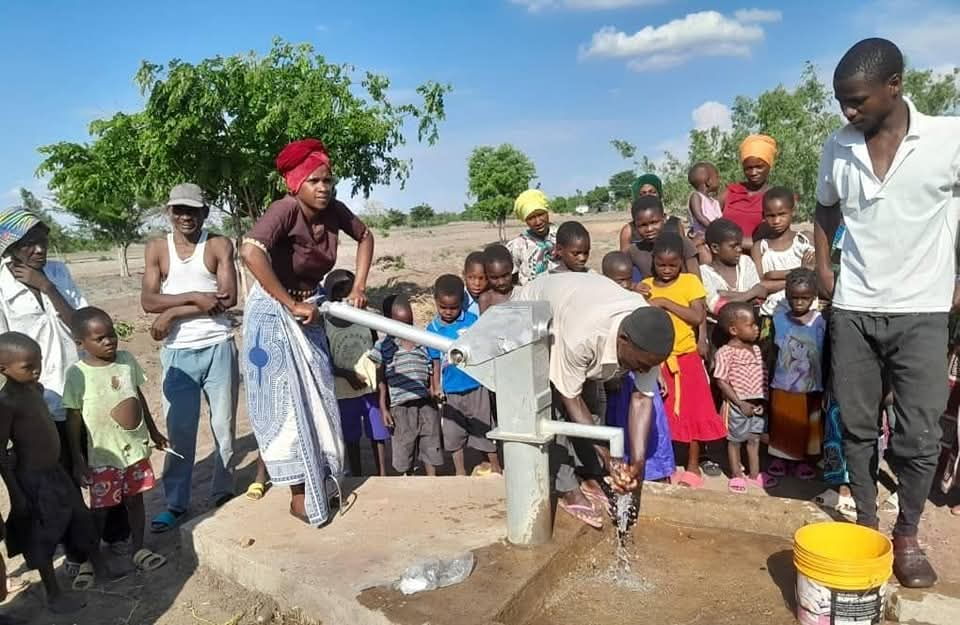
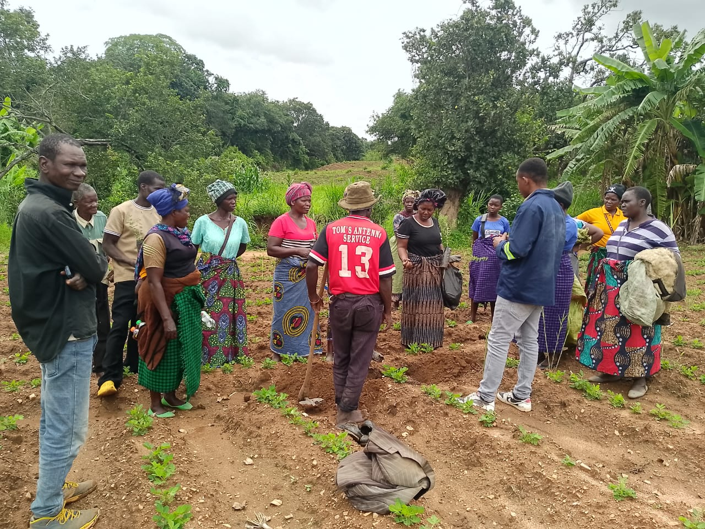
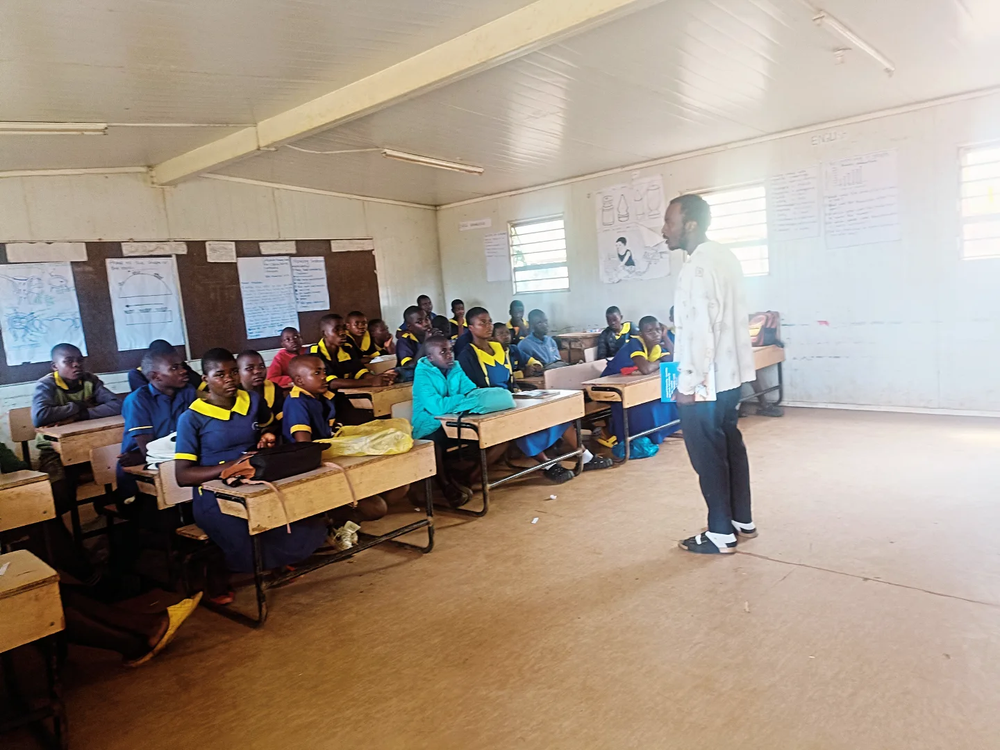

💧Clean Water Access: Hand-Pump Boreholes
Community-managed hand-pump boreholes in Chikwawa & Ntcheu districts. Women no longer walk 4km to unsafe water sources. Each borehole is owned by a local Water Point Committee.
- Distance to water: 4km → under 200 meters
- Girls’ school attendance: 40% → 85%
- Fully community-owned maintenance
- Cholera cases: 47 → 3 in 6 months

🌽Climate-Smart Agriculture & Food Security
Smallholder farmers trained in conservation agriculture, drought-resistant crops, and market linkages. Gender-intentional: 65% women farmers. Three farmer entrepreneur centres established.
- Farmer Field Schools in Dowa, Chitipa, Mchinji
- From 8 bags/acre → 30+ bags/acre average
- Post-harvest loss reduction training
- Access to climate-resilient seeds
 Climate ResilienceActive
Climate ResilienceActiveAgroforestry Restoration Initiative (ARI)
Community-led forest recovery combining tree planting, beekeeping livelihoods, and institutional partnership with Malawi's Forestry Department. Restoring degraded land and building local climate resilience.
- 39 community leaders trained in agroforestry
- Beekeeping phase: 20 trained, 6 apiaries planned
- Memorandum of Agreement with Forestry Dept
- 8 Traditional Authorities endorsed

📖Gender Equality & Inclusive Education
UNESCO-funded initiative reducing school dropout, addressing gender-based violence, and creating safe learning environments. Focus on keeping girls in secondary school through mentorship and community dialogue.
- Girls' attendance: 40% → 85%
- Teacher training on inclusive pedagogy
- Community anti-child marriage campaigns
- Scholarships for high-achieving girls